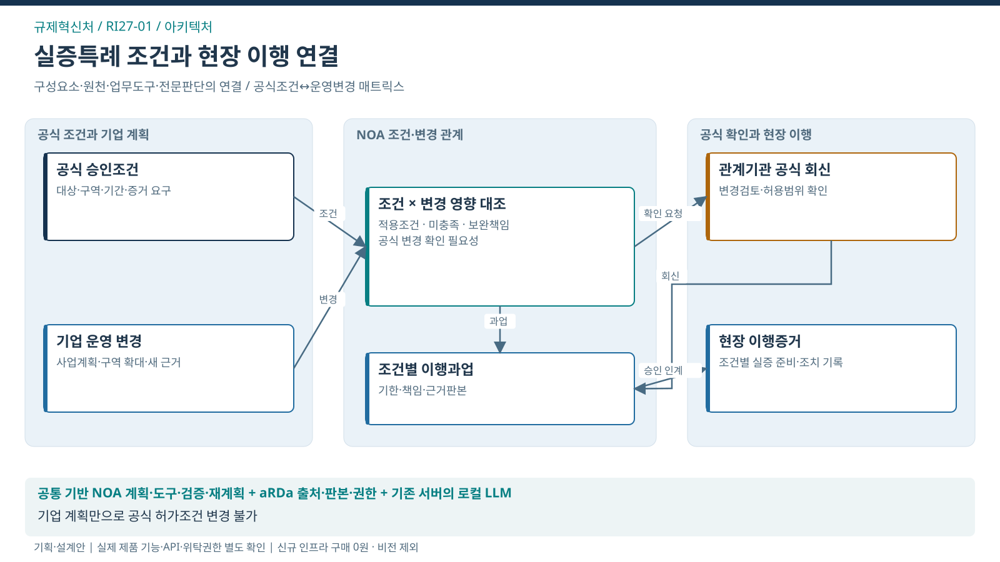
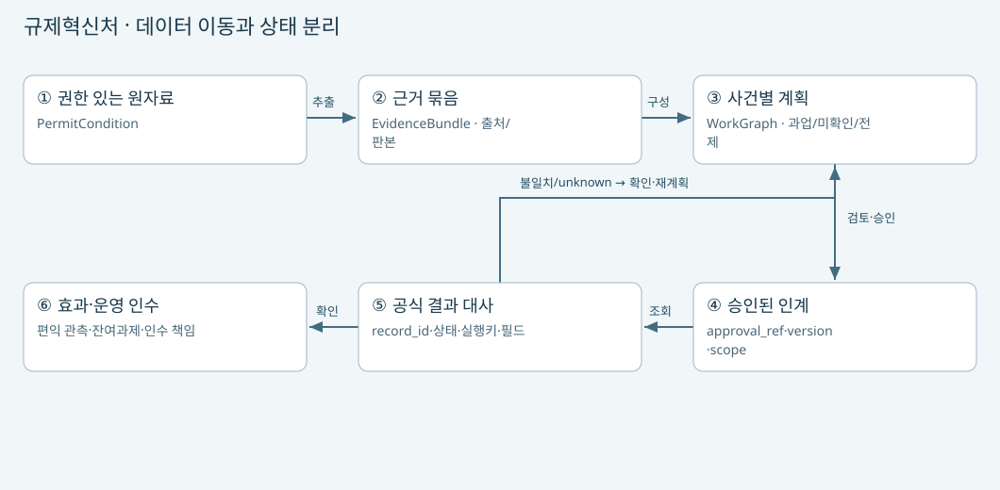

아키텍처 · 실증특례 조건과 현장 이행 연결
이 도식의 목적 · 업무 원천·NOA Skill·도구·공식 처리·결과의 연결

도식 원본 확대 · SVG · PPT 삽입용 PNG · 1600×900


핵심 해석
- 대표 사건: 특례 조건·시점·공간·운영 변경
- 처별 고유 로직: 공식조건↔운영변경 매트릭스
- 조건 분기: 현재 허용조건 안의 변경? → 충족 시 조건별 이행과업 검토 / 미충족 시 공식 변경검토·회신 대기
- 공식 결과: 유효 조건과 현장 이행 증거 일치
- 책임 경계: 기업 계획만으로 공식 허가조건 변경 불가
- 검증 상태: 실제 제품 기능·API·위탁권한·도입효과 미확정
- 승인 경계: 공식 결정의 효력은 AI가 변경하지 않음. 근거·계획 변경 시 영향받는 후속 실행 승인 재사용 차단·재검토
- 도식 경계: NOA 내부의 전문업무 관련 노드는 요청·인계·결과 참조. 물리 시험·보수·공식 판정은 외부 전문가·권한자의 실제 수행
사전기획·설계안 v1.0 · 2026-09-22 · 공고 미매핑 · 운영 시스템이 아닌 검토자료
서비스 흐름
| 단계 | 사람/시스템 처리 | 전달 데이터·분기 |
|---|---|---|
| 1. 목표 설정 | 규제샌드박스 담당자·실증기업 담당자 | 허가조건 변화와 현장의 불일치를 조기에 확인하여 안전한 실증 준비·이행을 지원함. |
| 2. 상황 이해 | NOA + aRDa | 특례 조건·시점·공간·운영 변경를 근거 위치·판본과 연결 |
| 3. 계획·검증 | 처별 Skill + 검증된 규칙/집계도구 | 승인조건의 대상·시점·증거 요구 확인 → 변경영향과 공식 확인사항 구성 → 기업·기관별 이행과업과 현장 반영 증거 연결 |
| 4. 검토·승인 | 전문가·공식 권한자 | 판본/범위/목적을 확인; 새 근거면 영향받는 후속 실행 승인 재사용 차단·재검토 |
| 5. 실행 | 승인된 어댑터 | 조건별 확인·보완 과업의 승인된 인계 |
| 6. 결과 확인 | 대사 도구 + 담당자 | 공식 회신과 현장 이행 증거가 대상 조건·판본에 맞게 연결됨 |
| 7. 예외·재계획 | NOA + 담당자 | 기업의 변경계획만으로 허가조건이 바뀐 것으로 처리하지 않음 |
| 8. 효과·인수 | 독립 검수자·현업 | 중요 조건 누락 / 변경 발생부터 확인까지 시간 / 기업 반복 보완 |
데이터 모델·공식 원장 구분
| 제안 엔터티 | 보유할 관계 | 공식성 |
|---|---|---|
| PermitCondition | condition_id, permit_id, source_locator, authority, valid_period, geographic_scope, condition_version / 공통: work_id·source_id·source_version·purpose·scope | 업무시스템 원자료 참조; NOA 보조 모델 |
| ConditionEvidence | evidence_id, condition_id/version, provider_role, source_id/locator, observed_at, verified_status / 공통: work_id·source_id·source_version·purpose·scope | 업무시스템 원자료 참조; NOA 보조 모델 |
| OperatingChange | change_id, permit_id, changed_fields, affected_condition_ids, proposed_at, review_status, plan_version / 공통: work_id·source_id·source_version·purpose·scope | 업무시스템 원자료 참조; NOA 보조 모델 |
| AuthorityResponse | response_id, permit_id, change_id, condition_version, official_status, issued_at, field_implementation_evidence / 공통: work_id·source_id·source_version·purpose·scope | 업무시스템 원자료 참조; NOA 보조 모델 |
- 공식 원장: 샌드박스 신청·승인·사후관리 기록. NOA의 추론·계획·실행 이력은 별도 보조 원장임. aRDa는 승인된 문서·지식 자산을 보유하며 회계·행정 원장을 대체하지 않음.
- 파일에 들어 있는 지시문은 데이터로 처리하며 도구 권한을 바꿀 수 없음.
인터페이스 명세 초안
| ID | 방향/작업 | 대상 | 현재 상태 |
|---|---|---|---|
| RI-IF-01 | 읽기 / 공식 기준·현재 사건·처리결과 조회 | 샌드박스 신청·승인·사후관리 기록 | 실제 API·허용권한 미확인; 논리 계약안 |
| RI-IF-02 | 쓰기 조건부 / 승인된 업무과업 인계·등록 | 샌드박스 신청·승인·사후관리 기록 | 실제 API·허용권한 미확인; 논리 계약안 |
조회 계약
- 입력:
work_id,request_id, 대상키, 목적,actor_scope,source_version - 결과 조회키:
execution_id또는idempotency_key우선 / 기존record_id·business_key보조 사용 - 반환:
found / not_found / unknown / denied, 자료판본, 조회시각, 출처 - 응답 유실: 접수번호 유실 시에도 같은 실행키로 조회. 미지원 시스템은 수동대사로 인계
- 재등록 조건:
not_found와unknown의 구별. 존재하지 않음 미확정 시 자동 재등록 금지
승인된 인계 계약
- 입력:
execution_id,idempotency_key,approval_ref,plan_version,evidence_version,target,payload_hash,expected_version - 반환:
accepted / registered / rejected / unknown및 공식record_id - 완료 기준:
accepted와 업무완료의 구분. 공식 기록·결과 대사 후 완료 판단 - 중단 조건: 키 충돌·권한철회·판본 충돌 시 실행 중단
- 수동 경로: API 미확보 시 승인된 내보내기·수동 인계. 자동 실행 성과에서 제외
배치·보안·운영
- 업무 단위·역할별 데이터 권한을 조회와 쓰기 모두에 재확인. 문서 접근권한은 검색 인덱스·임베딩·답변·로그까지 이어짐.
- 로컬 LLM 추론은 기존 서버에서 수행. 현 서버 사양·모델·동시사용량 미확인; 착수 초기에 지연·메모리·큐를 측정함. 부족하면 모델/배치/동시성·범위를 조정하고 신규 서버비를 숨겨 넣지 않음.
- 공통 WorkGraph·SkillContract 등은 논리 계약안이며 CCK 현 제품 API로 확인된 명칭이 아님.
- 보존기간·법적 처리근거·부서 간 공유·위탁책임은 실제 자료별로 확정함. 본 시제품에는 개인 원자료가 없음.
- 장애 시 기존 공식 업무 경로로 복귀. Agent 쓰기 기능을 비활성화하고 사건·실행키·공식 결과를 보존해 수동 대사함. 자료 삭제나 공식 거래 취소를 롤백으로 실행하지 않음.
근거: 처별 편성 대화 · 조직운영 통합기능 대화 · 근거의 범위와 한계
구성요소별 아키텍처
- 처별 화면과 Skill만 업무에 맞게 추가함. NOA 공통 실행·승인·대사, aRDa 출처·권한 처리는 공통 비용으로 재사용함.
- 기존 공식 시스템은 별도 원장을 유지하고 필요한 조회·인계만 어댑터로 연결함. ERP 선택 모듈은 모든 처에 일괄 탑재하지 않음.
데이터 흐름도

① 원자료 접근권한·처리목적 확인 → ② 출처·판본·미확인 상태를 가진 근거 묶음 → ③ 사건별 과업·전제조건 → ④ 사람 승인·현재 권한 확인 → ⑤ 공식 record_id와 같은 실행키 대사 → ⑥ 결과와 실제 편익을 분리해 관측·인수함.
불일치·응답 미확인은 성공 처리하지 않고 확인·재계획으로 복귀함.
업무·데이터의 보존/삭제 정책은 원자료의 공식 규칙을 따름.
원자료 정정 시 파생 근거·계획·승인 영향이 추적돼야 하며, 이 관계는 화면 표시만으로 구현 완료되지 않음.